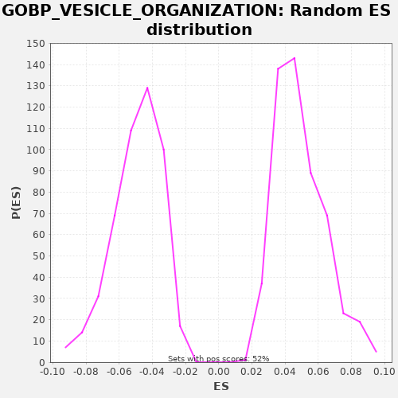

| | | Dataset | X_enriched_genes copy |
| Phenotype | NoPhenotypeAvailable |
| Upregulated in class | na_neg |
| GeneSet | GOBP_VESICLE_ORGANIZATION |
| Enrichment Score (ES) | -0.27912578 |
| Normalized Enrichment Score (NES) | -5.672746 |
| Nominal p-value | 0.0 |
| FDR q-value | 0.0 |
| FWER p-Value | 0.0 |
Table: GSEA Results Summary
 Fig 1: Enrichment plot: GOBP_VESICLE_ORGANIZATION
Fig 1: Enrichment plot: GOBP_VESICLE_ORGANIZATION
Profile of the Running ES Score & Positions of GeneSet Members on the Rank Ordered List
| SYMBOL | RANK IN GENE LIST | RANK METRIC SCORE | RUNNING ES | CORE ENRICHMENT | | 1 | VPS28 | 157 | 0.278 | -0.0050 | No |
| 2 | S100A10 | 182 | 0.260 | -0.0030 | No |
| 3 | CHMP2A | 239 | 0.231 | -0.0026 | No |
| 4 | TRAPPC6A | 335 | 0.180 | -0.0044 | No |
| 5 | ANXA2 | 394 | 0.159 | -0.0041 | No |
| 6 | MVB12A | 432 | 0.152 | -0.0028 | No |
| 7 | STX8 | 518 | 0.136 | -0.0040 | No |
| 8 | RAB34 | 574 | 0.125 | -0.0036 | No |
| 9 | NAPA | 700 | 0.103 | -0.0069 | No |
| 10 | RAB3A | 792 | 0.089 | -0.0084 | No |
| 11 | BLOC1S1 | 1106 | 0.054 | -0.0215 | No |
| 12 | LMAN1 | 1167 | 0.049 | -0.0214 | No |
| 13 | TRAPPC5 | 1199 | 0.047 | -0.0198 | No |
| 14 | PLEKHJ1 | 1231 | 0.044 | -0.0182 | No |
| 15 | TRAPPC4 | 1349 | 0.038 | -0.0210 | No |
| 16 | AQP11 | 1373 | 0.037 | -0.0190 | No |
| 17 | TMEM175 | 1433 | 0.034 | -0.0188 | No |
| 18 | TRAPPC2L | 1468 | 0.032 | -0.0173 | No |
| 19 | CTSZ | 1537 | 0.029 | -0.0177 | No |
| 20 | ZDHHC2 | 1772 | 0.023 | -0.0266 | No |
| 21 | ZPBP2 | 1825 | 0.021 | -0.0261 | No |
| 22 | TAP2 | 1862 | 0.021 | -0.0247 | No |
| 23 | TMED10 | 1956 | 0.019 | -0.0263 | No |
| 24 | VPS36 | 2009 | 0.018 | -0.0258 | No |
| 25 | VPS37D | 2027 | 0.018 | -0.0235 | No |
| 26 | SAR1B | 2343 | 0.013 | -0.0367 | No |
| 27 | SPHK1 | 2405 | 0.012 | -0.0366 | No |
| 28 | RAB13 | 2411 | 0.012 | -0.0336 | No |
| 29 | BAIAP3 | 2609 | 0.010 | -0.0407 | No |
| 30 | RUBCNL | 2614 | 0.010 | -0.0376 | No |
| 31 | HOOK2 | 2672 | 0.009 | -0.0374 | No |
| 32 | ZPBP | 2723 | 0.009 | -0.0367 | No |
| 33 | SPINK2 | 3078 | 0.006 | -0.0520 | No |
| 34 | TMEM9 | 3309 | 0.004 | -0.0607 | No |
| 35 | DYSF | 3377 | 0.004 | -0.0610 | No |
| 36 | AKTIP | 3404 | 0.003 | -0.0591 | No |
| 37 | CPLANE2 | 3715 | 0.001 | -0.0720 | No |
| 38 | SPACA1 | 3788 | 0.001 | -0.0725 | No |
| 39 | HPS1 | 3882 | 0.000 | -0.0742 | No |
| 40 | TRAPPC1 | 3917 | 0.000 | -0.0727 | No |
| 41 | ACRBP | 3947 | -0.000 | -0.0710 | No |
| 42 | F2RL3 | 4124 | -0.001 | -0.0769 | No |
| 43 | MAPK15 | 4443 | -0.003 | -0.0903 | No |
| 44 | PDCD6 | 4577 | -0.003 | -0.0940 | No |
| 45 | SEC31B | 4623 | -0.004 | -0.0931 | No |
| 46 | FER1L5 | 5116 | -0.006 | -0.1155 | No |
| 47 | SLC2A4 | 5227 | -0.007 | -0.1180 | No |
| 48 | GORASP1 | 5689 | -0.009 | -0.1389 | No |
| 49 | BET1 | 5728 | -0.009 | -0.1376 | No |
| 50 | DTNBP1 | 6144 | -0.011 | -0.1560 | No |
| 51 | CNIH3 | 6345 | -0.012 | -0.1632 | No |
| 52 | SRPX | 6559 | -0.012 | -0.1711 | No |
| 53 | SEC16B | 6563 | -0.012 | -0.1680 | No |
| 54 | PMEL | 6569 | -0.012 | -0.1650 | No |
| 55 | CD34 | 6715 | -0.013 | -0.1694 | No |
| 56 | TRAPPC3 | 6902 | -0.014 | -0.1758 | No |
| 57 | TAP1 | 6905 | -0.014 | -0.1727 | No |
| 58 | GRIA1 | 7014 | -0.015 | -0.1751 | No |
| 59 | PLA2G5 | 7539 | -0.017 | -0.1992 | No |
| 60 | CPLX3 | 7553 | -0.017 | -0.1966 | No |
| 61 | CHMP4C | 7607 | -0.017 | -0.1962 | No |
| 62 | SRGN | 7703 | -0.018 | -0.1979 | No |
| 63 | RAB29 | 8063 | -0.019 | -0.2134 | No |
| 64 | ZDHHC15 | 8096 | -0.020 | -0.2118 | No |
| 65 | ARF1 | 8233 | -0.020 | -0.2157 | No |
| 66 | RILP | 8345 | -0.021 | -0.2182 | No |
| 67 | VPS25 | 8496 | -0.022 | -0.2228 | No |
| 68 | F8 | 8533 | -0.022 | -0.2214 | No |
| 69 | VAMP4 | 8700 | -0.023 | -0.2268 | No |
| 70 | CLN3 | 8832 | -0.024 | -0.2304 | No |
| 71 | NKD2 | 9214 | -0.026 | -0.2471 | No |
| 72 | STX19 | 9425 | -0.028 | -0.2548 | No |
| 73 | PRKN | 9622 | -0.029 | -0.2618 | No |
| 74 | BLOC1S3 | 9928 | -0.032 | -0.2745 | No |
| 75 | RAB32 | 9930 | -0.032 | -0.2713 | No |
| 76 | VTA1 | 9961 | -0.032 | -0.2696 | No |
| 77 | CNIH2 | 10017 | -0.032 | -0.2692 | No |
| 78 | TSG101 | 10069 | -0.033 | -0.2687 | No |
| 79 | STX1B | 10146 | -0.033 | -0.2694 | No |
| 80 | PLEKHF1 | 10216 | -0.034 | -0.2697 | No |
| 81 | PHETA1 | 10279 | -0.034 | -0.2697 | No |
| 82 | STX6 | 10301 | -0.035 | -0.2676 | No |
| 83 | VAMP1 | 10364 | -0.035 | -0.2676 | No |
| 84 | FOLR1 | 10383 | -0.035 | -0.2653 | No |
| 85 | STX3 | 10427 | -0.036 | -0.2643 | No |
| 86 | PEF1 | 10447 | -0.036 | -0.2620 | No |
| 87 | TRAPPC9 | 10515 | -0.037 | -0.2623 | No |
| 88 | COL7A1 | 10526 | -0.037 | -0.2595 | No |
| 89 | ATP13A2 | 10562 | -0.037 | -0.2581 | No |
| 90 | MYO7A | 10686 | -0.038 | -0.2613 | No |
| 91 | F5 | 10702 | -0.038 | -0.2588 | No |
| 92 | VAMP3 | 10751 | -0.039 | -0.2581 | No |
| 93 | VPS8 | 10765 | -0.039 | -0.2555 | No |
| 94 | CHMP2B | 10772 | -0.039 | -0.2526 | No |
| 95 | BLOC1S5 | 10792 | -0.039 | -0.2503 | No |
| 96 | LAPTM4B | 10800 | -0.039 | -0.2475 | No |
| 97 | CORO1A | 10863 | -0.040 | -0.2475 | No |
| 98 | AKT2 | 10901 | -0.040 | -0.2461 | No |
| 99 | PLA2G3 | 11258 | -0.043 | -0.2615 | No |
| 100 | SNF8 | 11273 | -0.044 | -0.2590 | No |
| 101 | GRIK5 | 11404 | -0.045 | -0.2625 | No |
| 102 | VAMP8 | 11443 | -0.045 | -0.2613 | No |
| 103 | SEC13 | 11566 | -0.047 | -0.2644 | No |
| 104 | TRIM9 | 11656 | -0.048 | -0.2658 | No |
| 105 | SCARB2 | 11673 | -0.048 | -0.2634 | No |
| 106 | SNX3 | 11739 | -0.049 | -0.2635 | No |
| 107 | TFG | 11957 | -0.052 | -0.2716 | No |
| 108 | DNM1 | 12003 | -0.053 | -0.2707 | No |
| 109 | VTI1A | 12009 | -0.053 | -0.2677 | No |
| 110 | RAB20 | 12013 | -0.053 | -0.2646 | No |
| 111 | HPS4 | 12065 | -0.053 | -0.2641 | No |
| 112 | RAB7B | 12082 | -0.054 | -0.2616 | No |
| 113 | VPS37C | 12273 | -0.056 | -0.2683 | No |
| 114 | SNAPIN | 12455 | -0.059 | -0.2745 | No |
| 115 | TAPBP | 12544 | -0.060 | -0.2759 | Yes |
| 116 | CCDC136 | 12567 | -0.061 | -0.2738 | Yes |
| 117 | CHMP4B | 12632 | -0.062 | -0.2739 | Yes |
| 118 | SNAP23 | 12634 | -0.062 | -0.2707 | Yes |
| 119 | VAPA | 12663 | -0.062 | -0.2689 | Yes |
| 120 | PREB | 12713 | -0.063 | -0.2682 | Yes |
| 121 | LAMTOR1 | 12738 | -0.063 | -0.2662 | Yes |
| 122 | SPG11 | 12750 | -0.063 | -0.2635 | Yes |
| 123 | RAB38 | 12846 | -0.064 | -0.2653 | Yes |
| 124 | STX11 | 12940 | -0.066 | -0.2669 | Yes |
| 125 | SEC23A | 13061 | -0.068 | -0.2699 | Yes |
| 126 | DOC2B | 13091 | -0.068 | -0.2682 | Yes |
| 127 | VAMP7 | 13153 | -0.069 | -0.2681 | Yes |
| 128 | SYT13 | 13210 | -0.070 | -0.2678 | Yes |
| 129 | BLOC1S4 | 13214 | -0.070 | -0.2647 | Yes |
| 130 | ALS2CL | 13285 | -0.071 | -0.2651 | Yes |
| 131 | SYT9 | 13399 | -0.073 | -0.2678 | Yes |
| 132 | TGFA | 13411 | -0.074 | -0.2651 | Yes |
| 133 | VPS11 | 13413 | -0.074 | -0.2619 | Yes |
| 134 | STX2 | 13424 | -0.074 | -0.2592 | Yes |
| 135 | RFX2 | 13431 | -0.074 | -0.2562 | Yes |
| 136 | TMED9 | 13469 | -0.074 | -0.2549 | Yes |
| 137 | CAV1 | 13493 | -0.075 | -0.2529 | Yes |
| 138 | CHMP7 | 13503 | -0.075 | -0.2501 | Yes |
| 139 | VPS33B | 13511 | -0.075 | -0.2472 | Yes |
| 140 | DLG4 | 13564 | -0.076 | -0.2467 | Yes |
| 141 | PI4K2A | 13616 | -0.077 | -0.2461 | Yes |
| 142 | UNC13A | 13620 | -0.077 | -0.2430 | Yes |
| 143 | UNC13C | 13726 | -0.079 | -0.2452 | Yes |
| 144 | GOSR2 | 13740 | -0.079 | -0.2427 | Yes |
| 145 | TBPL1 | 13754 | -0.079 | -0.2401 | Yes |
| 146 | RAB5B | 13764 | -0.079 | -0.2373 | Yes |
| 147 | RAB14 | 13863 | -0.081 | -0.2392 | Yes |
| 148 | ANKRD27 | 13891 | -0.081 | -0.2374 | Yes |
| 149 | NECTIN2 | 13946 | -0.083 | -0.2369 | Yes |
| 150 | DNM3 | 13963 | -0.083 | -0.2345 | Yes |
| 151 | TRAPPC2 | 13981 | -0.083 | -0.2322 | Yes |
| 152 | STX17 | 14005 | -0.084 | -0.2301 | Yes |
| 153 | SNAP29 | 14055 | -0.084 | -0.2294 | Yes |
| 154 | SNX11 | 14153 | -0.086 | -0.2313 | Yes |
| 155 | ALS2 | 14219 | -0.088 | -0.2314 | Yes |
| 156 | VPS39 | 14238 | -0.088 | -0.2291 | Yes |
| 157 | SAR1A | 14335 | -0.090 | -0.2309 | Yes |
| 158 | STX1A | 14368 | -0.091 | -0.2293 | Yes |
| 159 | VPS18 | 14394 | -0.092 | -0.2274 | Yes |
| 160 | UNC13B | 14405 | -0.092 | -0.2246 | Yes |
| 161 | VPS37B | 14443 | -0.092 | -0.2233 | Yes |
| 162 | MCFD2 | 14481 | -0.093 | -0.2220 | Yes |
| 163 | SNAP47 | 14501 | -0.094 | -0.2197 | Yes |
| 164 | TRAPPC6B | 14527 | -0.094 | -0.2178 | Yes |
| 165 | CHMP6 | 14549 | -0.095 | -0.2157 | Yes |
| 166 | VPS41 | 14572 | -0.095 | -0.2136 | Yes |
| 167 | SEC22B | 14596 | -0.095 | -0.2115 | Yes |
| 168 | CSNK1D | 14600 | -0.096 | -0.2084 | Yes |
| 169 | SHROOM2 | 14635 | -0.096 | -0.2070 | Yes |
| 170 | TGFBRAP1 | 14698 | -0.097 | -0.2069 | Yes |
| 171 | ANXA1 | 14736 | -0.098 | -0.2056 | Yes |
| 172 | VTI1B | 14757 | -0.099 | -0.2034 | Yes |
| 173 | CPLX1 | 14948 | -0.102 | -0.2101 | Yes |
| 174 | CHMP5 | 15037 | -0.104 | -0.2115 | Yes |
| 175 | VAV3 | 15062 | -0.105 | -0.2095 | Yes |
| 176 | SYP | 15072 | -0.105 | -0.2067 | Yes |
| 177 | KLHL12 | 15074 | -0.105 | -0.2035 | Yes |
| 178 | VAMP2 | 15113 | -0.106 | -0.2022 | Yes |
| 179 | AP2M1 | 15211 | -0.107 | -0.2040 | Yes |
| 180 | CHMP1A | 15254 | -0.108 | -0.2030 | Yes |
| 181 | SNCA | 15407 | -0.112 | -0.2077 | Yes |
| 182 | SNX33 | 15424 | -0.112 | -0.2053 | Yes |
| 183 | SEC24A | 15445 | -0.113 | -0.2031 | Yes |
| 184 | SCAP | 15461 | -0.113 | -0.2006 | Yes |
| 185 | STX7 | 15472 | -0.113 | -0.1979 | Yes |
| 186 | SNX10 | 15489 | -0.114 | -0.1955 | Yes |
| 187 | RAB27A | 15533 | -0.115 | -0.1945 | Yes |
| 188 | GOLPH3L | 15543 | -0.115 | -0.1917 | Yes |
| 189 | WASHC5 | 15556 | -0.115 | -0.1891 | Yes |
| 190 | PIP4K2A | 15569 | -0.116 | -0.1865 | Yes |
| 191 | BLOC1S6 | 15597 | -0.116 | -0.1846 | Yes |
| 192 | EXOC8 | 15628 | -0.117 | -0.1829 | Yes |
| 193 | TMEM127 | 15643 | -0.117 | -0.1804 | Yes |
| 194 | SEC24D | 15650 | -0.118 | -0.1775 | Yes |
| 195 | SORT1 | 15686 | -0.119 | -0.1761 | Yes |
| 196 | CTSC | 15714 | -0.119 | -0.1742 | Yes |
| 197 | CNIH1 | 15715 | -0.119 | -0.1710 | Yes |
| 198 | TMCC1 | 15735 | -0.120 | -0.1687 | Yes |
| 199 | VPS37A | 15789 | -0.121 | -0.1683 | Yes |
| 200 | C2CD5 | 15790 | -0.121 | -0.1650 | Yes |
| 201 | PPP6C | 15999 | -0.126 | -0.1726 | Yes |
| 202 | STAM | 16347 | -0.136 | -0.1875 | Yes |
| 203 | RAB11A | 16360 | -0.136 | -0.1849 | Yes |
| 204 | SNAP91 | 16424 | -0.138 | -0.1849 | Yes |
| 205 | VPS4A | 16436 | -0.138 | -0.1823 | Yes |
| 206 | AP1M1 | 16445 | -0.138 | -0.1794 | Yes |
| 207 | FAM160A2 | 16499 | -0.140 | -0.1790 | Yes |
| 208 | PIKFYVE | 16530 | -0.141 | -0.1773 | Yes |
| 209 | TBC1D4 | 16557 | -0.141 | -0.1754 | Yes |
| 210 | SDC1 | 16602 | -0.143 | -0.1744 | Yes |
| 211 | STXBP1 | 16630 | -0.144 | -0.1726 | Yes |
| 212 | SEC16A | 16659 | -0.145 | -0.1708 | Yes |
| 213 | SNX19 | 16673 | -0.145 | -0.1682 | Yes |
| 214 | HGS | 16730 | -0.147 | -0.1679 | Yes |
| 215 | ABCA1 | 16738 | -0.147 | -0.1650 | Yes |
| 216 | RAB8A | 16773 | -0.149 | -0.1636 | Yes |
| 217 | STX12 | 16778 | -0.149 | -0.1605 | Yes |
| 218 | SYT7 | 16788 | -0.149 | -0.1578 | Yes |
| 219 | CHMP3 | 16790 | -0.149 | -0.1546 | Yes |
| 220 | CHP1 | 16800 | -0.149 | -0.1518 | Yes |
| 221 | SERPINE2 | 16827 | -0.150 | -0.1499 | Yes |
| 222 | STAM2 | 16877 | -0.152 | -0.1492 | Yes |
| 223 | SCFD1 | 16878 | -0.152 | -0.1460 | Yes |
| 224 | ANKFY1 | 16941 | -0.154 | -0.1460 | Yes |
| 225 | SNAP25 | 16989 | -0.155 | -0.1452 | Yes |
| 226 | PI4K2B | 17017 | -0.156 | -0.1433 | Yes |
| 227 | STX16 | 17023 | -0.157 | -0.1403 | Yes |
| 228 | STXBP6 | 17056 | -0.158 | -0.1388 | Yes |
| 229 | AP3B1 | 17105 | -0.160 | -0.1380 | Yes |
| 230 | TBC1D20 | 17116 | -0.160 | -0.1353 | Yes |
| 231 | USP50 | 17165 | -0.161 | -0.1346 | Yes |
| 232 | TMED2 | 17221 | -0.164 | -0.1342 | Yes |
| 233 | CAV2 | 17270 | -0.165 | -0.1335 | Yes |
| 234 | BCL2 | 17367 | -0.169 | -0.1352 | Yes |
| 235 | SYT1 | 17399 | -0.170 | -0.1336 | Yes |
| 236 | PPP6R1 | 17419 | -0.171 | -0.1313 | Yes |
| 237 | F2R | 17438 | -0.171 | -0.1290 | Yes |
| 238 | PIP4K2B | 17502 | -0.174 | -0.1291 | Yes |
| 239 | SYT11 | 17506 | -0.174 | -0.1260 | Yes |
| 240 | IST1 | 17513 | -0.174 | -0.1231 | Yes |
| 241 | KIF13A | 17542 | -0.175 | -0.1213 | Yes |
| 242 | RAB8B | 17593 | -0.178 | -0.1206 | Yes |
| 243 | VAPB | 17595 | -0.178 | -0.1174 | Yes |
| 244 | BLOC1S2 | 17599 | -0.178 | -0.1143 | Yes |
| 245 | ZFYVE16 | 17602 | -0.178 | -0.1112 | Yes |
| 246 | ANXA8 | 17611 | -0.179 | -0.1084 | Yes |
| 247 | ARFGAP3 | 17661 | -0.181 | -0.1077 | Yes |
| 248 | GOSR1 | 17681 | -0.182 | -0.1054 | Yes |
| 249 | SEC24B | 17692 | -0.183 | -0.1027 | Yes |
| 250 | SYNJ1 | 17708 | -0.184 | -0.1002 | Yes |
| 251 | DNM2 | 17740 | -0.185 | -0.0986 | Yes |
| 252 | CREB1 | 17741 | -0.185 | -0.0954 | Yes |
| 253 | RAB1B | 17785 | -0.188 | -0.0944 | Yes |
| 254 | SYT4 | 17787 | -0.188 | -0.0912 | Yes |
| 255 | FNBP1L | 17871 | -0.191 | -0.0923 | Yes |
| 256 | SEC23IP | 17900 | -0.193 | -0.0905 | Yes |
| 257 | WASL | 17907 | -0.193 | -0.0875 | Yes |
| 258 | LYST | 17939 | -0.195 | -0.0859 | Yes |
| 259 | ZEB2 | 17991 | -0.197 | -0.0853 | Yes |
| 260 | GBF1 | 17995 | -0.197 | -0.0822 | Yes |
| 261 | HOOK1 | 17996 | -0.197 | -0.0790 | Yes |
| 262 | SEC23B | 18015 | -0.198 | -0.0767 | Yes |
| 263 | SDC4 | 18029 | -0.199 | -0.0741 | Yes |
| 264 | TRAPPC10 | 18047 | -0.200 | -0.0718 | Yes |
| 265 | USO1 | 18060 | -0.201 | -0.0691 | Yes |
| 266 | SEC24C | 18077 | -0.202 | -0.0667 | Yes |
| 267 | INSIG1 | 18146 | -0.205 | -0.0670 | Yes |
| 268 | ARFGAP2 | 18165 | -0.206 | -0.0647 | Yes |
| 269 | AP3D1 | 18209 | -0.209 | -0.0637 | Yes |
| 270 | CALR | 18222 | -0.209 | -0.0611 | Yes |
| 271 | KIF5B | 18233 | -0.210 | -0.0584 | Yes |
| 272 | EPS15 | 18282 | -0.213 | -0.0577 | Yes |
| 273 | SQSTM1 | 18346 | -0.217 | -0.0577 | Yes |
| 274 | CLCN3 | 18353 | -0.218 | -0.0548 | Yes |
| 275 | RAB22A | 18355 | -0.218 | -0.0516 | Yes |
| 276 | RAB1A | 18366 | -0.218 | -0.0488 | Yes |
| 277 | SDCBP | 18443 | -0.224 | -0.0496 | Yes |
| 278 | GOLGA2 | 18473 | -0.225 | -0.0478 | Yes |
| 279 | TMF1 | 18492 | -0.227 | -0.0455 | Yes |
| 280 | PRKCI | 18551 | -0.231 | -0.0453 | Yes |
| 281 | ARFGEF2 | 18559 | -0.232 | -0.0424 | Yes |
| 282 | PTPRN | 18574 | -0.234 | -0.0399 | Yes |
| 283 | USP8 | 18581 | -0.234 | -0.0370 | Yes |
| 284 | WASHC4 | 18690 | -0.244 | -0.0394 | Yes |
| 285 | FBXO5 | 18707 | -0.245 | -0.0370 | Yes |
| 286 | MIA3 | 18709 | -0.246 | -0.0338 | Yes |
| 287 | PPP6R3 | 18764 | -0.252 | -0.0333 | Yes |
| 288 | ANKRD28 | 18786 | -0.255 | -0.0312 | Yes |
| 289 | DNAJC13 | 18802 | -0.256 | -0.0287 | Yes |
| 290 | PICALM | 18823 | -0.260 | -0.0265 | Yes |
| 291 | CPLX2 | 18843 | -0.262 | -0.0243 | Yes |
| 292 | NSF | 18926 | -0.270 | -0.0253 | Yes |
| 293 | VPS4B | 18949 | -0.273 | -0.0232 | Yes |
| 294 | GOLPH3 | 18985 | -0.278 | -0.0218 | Yes |
| 295 | MYO18A | 18998 | -0.279 | -0.0192 | Yes |
| 296 | PDCD6IP | 19067 | -0.291 | -0.0195 | Yes |
| 297 | UVRAG | 19089 | -0.295 | -0.0173 | Yes |
| 298 | AP1G1 | 19119 | -0.300 | -0.0156 | Yes |
| 299 | EEA1 | 19137 | -0.304 | -0.0132 | Yes |
| 300 | SEC31A | 19181 | -0.314 | -0.0122 | Yes |
| 301 | CORO1C | 19185 | -0.315 | -0.0091 | Yes |
| 302 | AREG | 19194 | -0.317 | -0.0063 | Yes |
| 303 | GNAI3 | 19205 | -0.322 | -0.0036 | Yes |
| 304 | HOOK3 | 19282 | -0.347 | -0.0043 | Yes |
| 305 | KNL1 | 19286 | -0.348 | -0.0012 | Yes |
| 306 | CUL3 | 19329 | -0.369 | -0.0002 | Yes |
| 307 | CD2AP | 19387 | -0.420 | 0.0001 | Yes |
| 308 | PAFAH1B1 | 19425 | -0.474 | 0.0014 | Yes |
Table: GSEA details [plain text format]

Fig 2: GOBP_VESICLE_ORGANIZATION: Random ES distribution
Gene set null distribution of ES for GOBP_VESICLE_ORGANIZATION